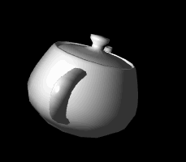

效果如图19。

图19
计算高光我们用逐片元计算，顶点shader不用修改，在片元shader中计算镜面高光。
<script id = "per-fragment-lighting-fs" type = "x-shader/x-fragment">
//...
uniform float uMaterialShininess;
uniform bool uShowSpecularHighlights;
uniform vec3 uPointLightingLocation;
uniform vec3 uPointLightingSpecularColor;
uniform vec3 uPointLightingDiffuseColor;
uniform sampler2D uSampler;
void main(void)
{
vec3 lightWeighting;
if (!uUseLighting)
{
lightWeighting = vec3(1.0, 1.0, 1.0);
}
else
{
vec3 lightDirection =
normalize(uPointLightingLocation - vPosition.xyz);
vec3 normal = normalize(vTransformedNormal);
float specularLightWeighting = 0.0;
if(uShowSpecularHighlights)
{
这里我们保留了在片元shader前已插值的法向量并归一化，作为中间变量。
高光开关如果是关闭的话增益为0 。
计算镜面反射亮度的方程为：
(Rm * V)α
Rm是光线在该点镜面反射后的归一化方向向量，V是眼（相机）到该点的归一化方向向量，α描述光洁度，α越大则越光亮，相当于材质的反光特征。
vec3 eyeDirection = normalize(-vPosition.xyz);
我们的相机一直在原点，所以这个向量很好算。
vec3 reflectionDirection = reflect(-lightDirection, normal);
GLSL提供了计算反射向量的函数reflect，lightDirection加负号是因为为了方便计算漫反射颜色，我们前面计算的lightDirection变量方向和光线是相反的。
specularLightWeighting =
pow(max(dot(reflectionDirection, eyeDirection), 0.0),
uMaterialShininess);
}
用公式计算镜面反射增益。
float diffuseLightWeighting = max(dot(normal, lightDirection), 0.0);
lightWeighting = uAmbientColor +
uPointLightingSpecularColor * specularLightWeighting +
uPointLightingDiffuseColor * diffuseLightWeighting;
}
////vec4 fragmentColor;
//...
gl_FragColor = vec4(fragmentColor.rgb * lightWeighting, fragmentColor.a);
}
</script>
最后计算总颜色增益还是把它们加起来。
前面我们加载过json数据，这一节一样方式加载茶壶的数据，具体参考完整代码。